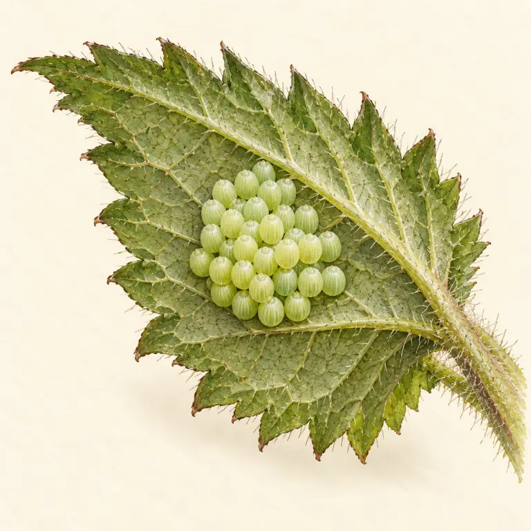
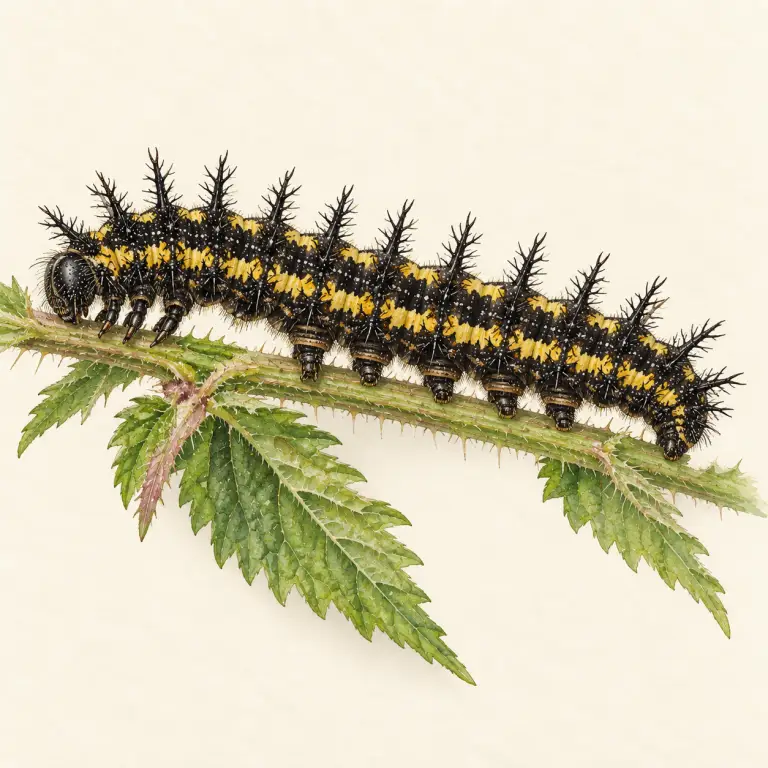
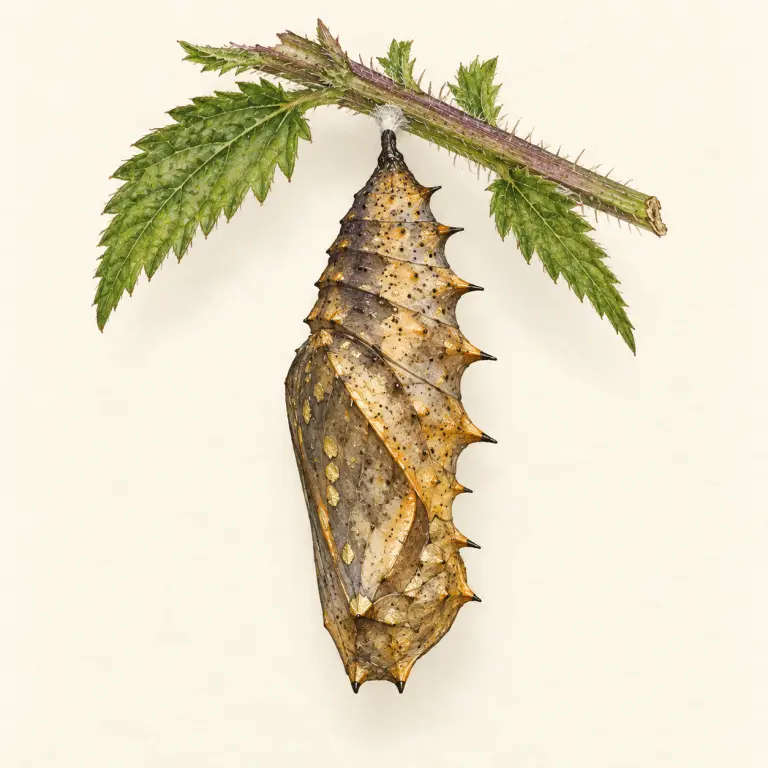
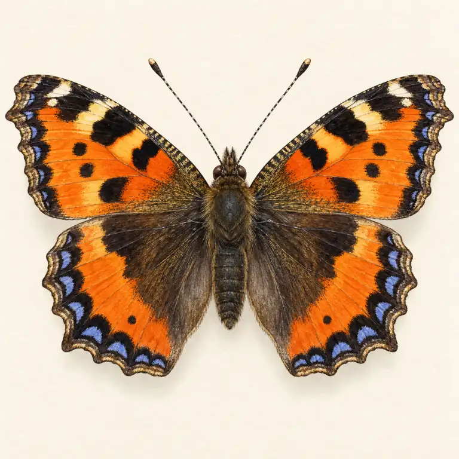
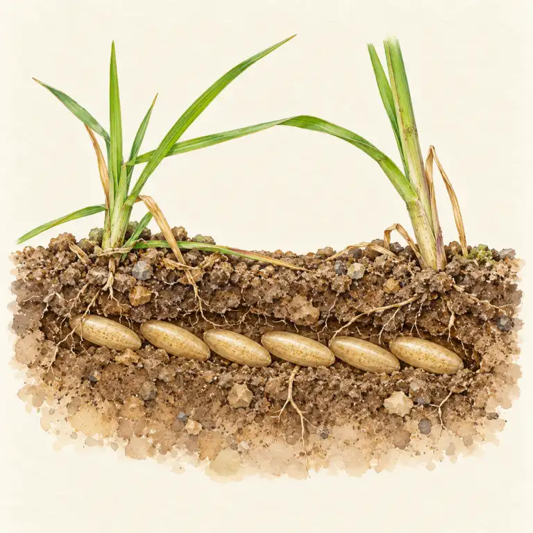
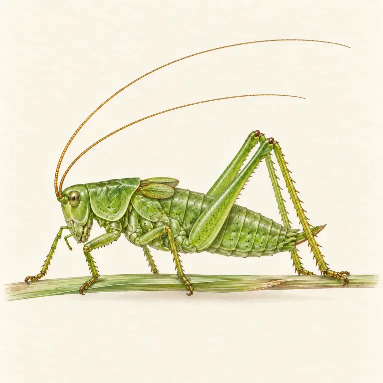
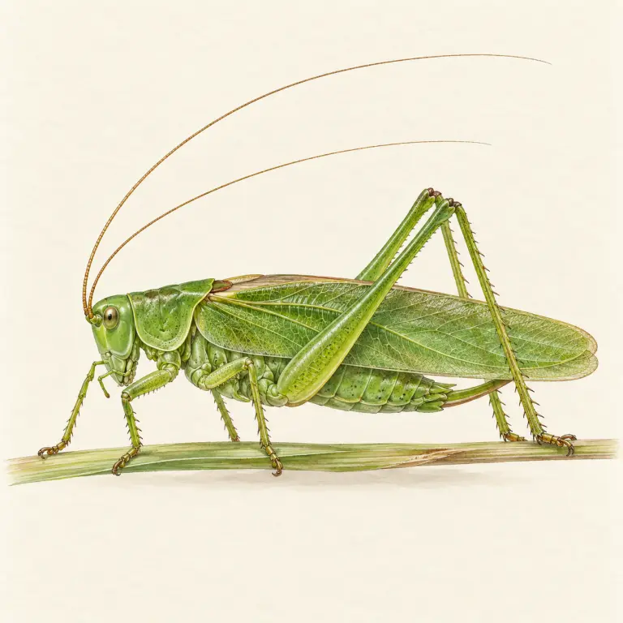

Pro 6.–7. ročník: hmyz, pavoukovci, korýši a stonožky – stavba těla i proměna.
Kukla se objevuje pouze u proměny dokonalé. Nymfa při proměně nedokonalé roste a opakovaně se svléká.
Babočka kopřivová · proměna dokonalá




Kobylka zelená · proměna nedokonalá



Hmyz má 3 páry nohou a tělo dělené na hlavu, hruď a zadeček. Pavoukovci mají 4 páry nohou a hlavohruď. Korýši dýchají žábrami a mají 5 a více párů končetin. Všichni členovci mají vnější kostru a svlékají se.